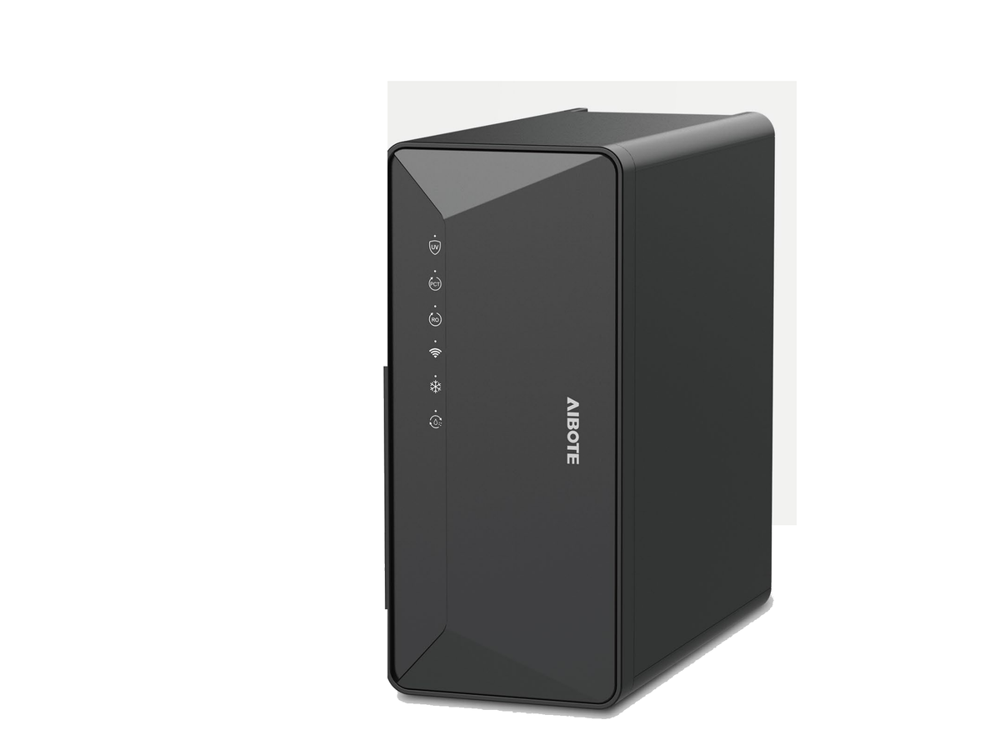

Under-Sink
Under-SinkRP-U02
RO with instant-hot faucet and chilled
SKU: RP-U02
MOQ: Confirm on enquiry
Home / Products / Under-Sink RO Systems / RP-U19

Under-Sink RO Systems
Under-sink RO with compressor cooling and instant heating (2320)
RP-U19 — Under-sink RO with compressor cooling and instant heating. Key specification: RO capacity 800–1000 GPD. Specifications are confirmed per model and order.
RP-U19 is an under-sink RO purifier with compressor cooling and instant heating. It holds a 1 L ice tank and offers six temperature settings with metered dispensing.
Voltage / frequency is configurable to the target country. Other configurations are confirmed per order.
9 specification rows from the ROPureOEM catalogue.
| RO capacity | 800–1000 GPD |
|---|---|
| Cooling | Compressor; ice tank 1 L; chilled water ≥1.5 L/h at ≤12°C |
| Heating | Instant heating; hot water ≥20 L/h at ≥90°C; six temperature settings |
| Dispensing | Metered dispensing |
| Cartridges | 2 (PCT + RO) |
| Rated power | 2200 W |
| Dimensions | 430 × 198 × 435 mm |
| Voltage / frequency | Configurable to target country |
| Other configurations | Confirmed per order |
Specifications are taken from the ROPureOEM catalogue. Where a value is not yet confirmed, it is listed as “Confirmed per order” — we do not publish unconfirmed figures.
Under-SinkRO with instant-hot faucet and chilled
SKU: RP-U02
MOQ: Confirm on enquiry
 Under-Sink
Under-SinkUnder-sink RO with storage heating
SKU: RP-U08
MOQ: Confirm on enquiry
 Under-Sink
Under-SinkUnder-sink hydrogen-water RO purifier
SKU: RP-U04
MOQ: Confirm on enquiry
 Under-Sink
Under-SinkDual-drive extended-output RO system
SKU: RP-U06
MOQ: Confirm on enquiry